J'avais l'habitude de rester assis là pendant des heures, à passer d'une ligne super trend à une autre sur mon graphique, en attendant qu'elles finissent toutes par s'aligner. Et la moitié du temps, au moment où je le remarquais, le trade était déjà parti. Alors j'ai arrêté de le faire manuellement. À la place, j'ai pris trois de mes stratégies super trend préférées, et je les ai toutes confiées à Claude.
Interface & Outils : TradingView
Contenu textuel & Code : Indicateurs Super Trend multiples, chandeliers BTCUSDT en timeframe 30m, lignes de tendance et outils de mesure de position (Long/Short avec PnL et ratio risque/rendement).
Action / Démonstration : Analyse graphique des configurations Super Trend et placement d'outils de mesure de position de trading.
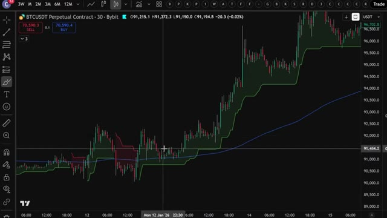
🔍 Agrandir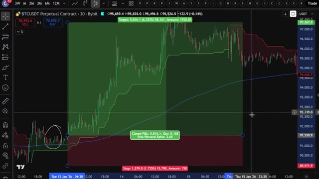
🔍 Agrandir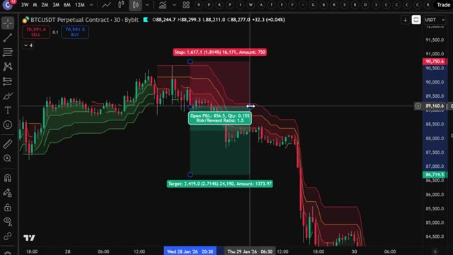
🔍 AgrandirDans cette vidéo, je vais vous montrer exactement comment j'ai automatisé les trois pour que TradingView attrape chaque signal pour moi, le trace directement sur le graphique, et m'alerte dès qu'il est prêt, sans que je regarde une seule bougie, sans savoir coder, et sans payer pour un groupe de signaux hors de prix. Et à la fin, je vous donnerai les invites exactes que j'utilise pour chaque stratégie, afin que vous puissiez les copier et construire la même configuration vous-même dans les 10 prochaines minutes. Passons donc directement aux choses sérieuses. Très bien, les gars, étape numéro une, inscrivez-vous sur un échange. Pour cette stratégie, nous allons utiliser Bybit. C'est l'un de mes principaux échanges pour le trading de produits dérivés et ils sont
Interface & Outils : TradingView, Bybit
Contenu textuel & Code : Boîte de dialogue "Create alert on" avec la condition "ST+Ichimoku (10, 3, 9, 26, 52, 26, 1...)"; panneau latéral montrant des notifications Webhook exécutées.
Action / Démonstration : Configuration d'une alerte automatisée liée à un indicateur combiné sur le graphique de TradingView.
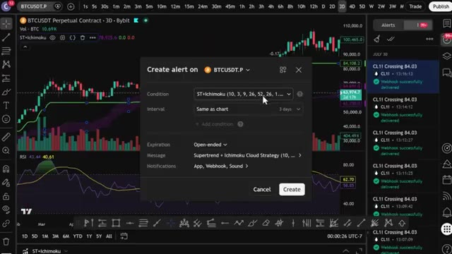
🔍 Agrandiroffrant des bonus absolument fous en ce moment. Voici la partie importante. Si Bybit n'est pas disponible dans votre pays ou que vous ne voulez pas faire de KYC, vous pouvez utiliser BingX comme alternative. Et le meilleur dans tout ça ? BingX n'exige pas de vérification KYC obligatoire pour le trading de base. BingX offre également jusqu'à 9 800 USDT de bonus de bienvenue. Je mettrai les liens des deux en description. Mais pour cette vidéo, nous allons utiliser Bybit.
Interface & Outils : Interfaces web des courtiers crypto Bybit et BingX.
Contenu textuel & Code : Offres promotionnelles, montants de bonus (30 000 USDT, 9 800+ USDT), et formulaires d'inscription. [DESC_IMAGE_1] Navigation sur les plateformes d'échange alternatives pour présenter les bonus et options sans KYC.
Action / Démonstration : Explications face caméra et analyse conceptuelle des marchés.
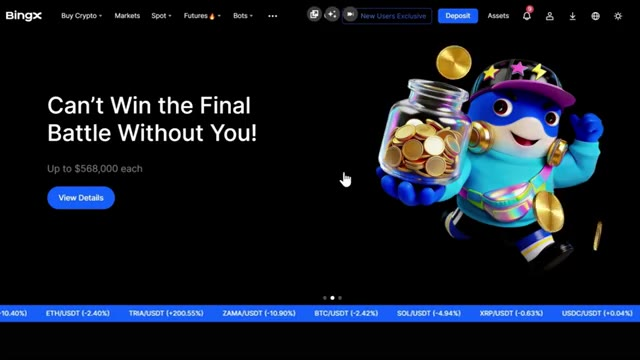
🔍 AgrandirPour vous inscrire sur Bybit et réclamer jusqu'à 30 000 USDT de bonus, cliquez sur le lien tout en haut de la description. Vous serez redirigé vers la page d'inscription où il vous suffit d'entrer vos informations et de créer un compte. Vous devrez compléter la vérification KYC sur Bybit pour profiter de tous les services sur leur plateforme. Personnellement, je n'ai aucun problème avec le KYC. C'est rapide et sécurisé. Mais si vous préférez une option sans KYC obligatoire, c'est pourquoi j'ai fourni BingX comme alternative ci-dessous. La deuxième étape consiste à déposer des fonds.
Interface & Outils : Navigateur Web affichant les interfaces d'inscription des plateformes d'échange crypto Bybit et BingX.
Contenu textuel & Code : Statistiques de la plateforme (volume de trading 24h, utilisateurs enregistrés), bonus de bienvenue (USDT), champs de saisie pour e-mail/mot de passe et code de parrainage.
Action / Démonstration : Présentation des étapes pour s'inscrire sur les bourses de crypto-monnaies partenaires et bénéficier des bonus de bienvenue.
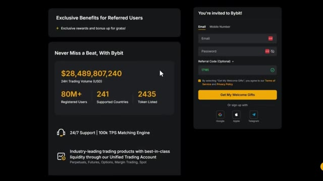
🔍 Agrandir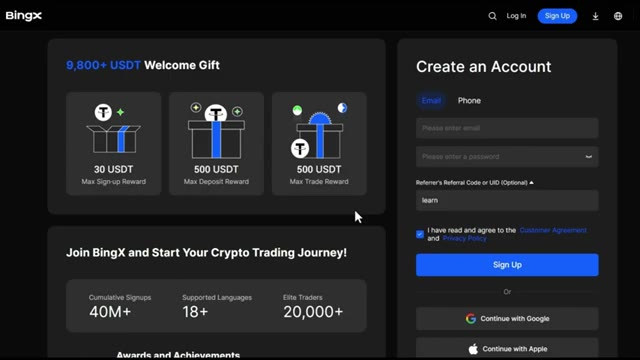
🔍 AgrandirLaissez-moi vous montrer comment déposer des fonds avant que nous ne plongions dans la stratégie. Une fois que vous êtes connecté à Bybit, cliquez sur Actifs dans le coin supérieur droit, puis cliquez sur Dépôt. Choisissez la pièce que vous souhaitez déposer. Je recommande l'USDT et sélectionnez le bon réseau de blockchain. Assurez-vous de choisir le bon réseau pour éviter de perdre vos fonds. Nous confirmerons les détails puis scannez le code QR ou copiez l'adresse de dépôt pour transférer vos fonds depuis votre portefeuille ou un autre échange. Si vous souhaitez déposer en utilisant une monnaie fiat, cliquez sur Acheter des cryptos en haut du menu, puis sélectionnez Dépôt fiat. Choisissez votre devise, entrez le
Interface & Outils : Bybit
Contenu textuel & Code : Options de dépôt de cryptomonnaies, sélection de l'USDT et choix des réseaux blockchain (TRC20, ERC20, Mantle Network).
Action / Démonstration : Navigation sur l'interface de l'exchange pour initier un dépôt de fonds en USDT.
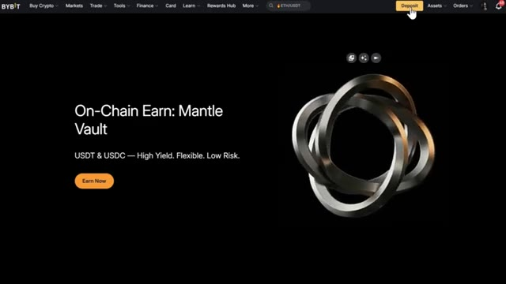
🔍 Agrandir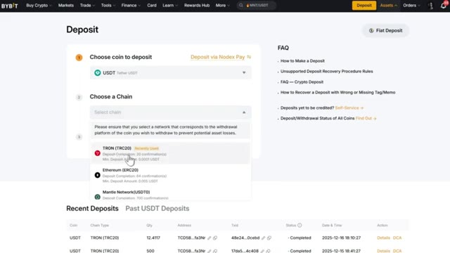
🔍 Agrandirmontant, sélectionnez votre mode de paiement et cliquez sur continuer. Une fois vos fonds déposés, il est temps d'ouvrir une position. L'étape numéro trois consiste à ouvrir votre première position. Cliquez sur trader dans le menu supérieur, puis sélectionnez futures. Cela vous mènera à l'interface de trading. Choisissez l'actif que vous souhaitez négocier dans le coin supérieur gauche. Pour cet exemple, j'utiliserai Bitcoin. Sélectionnez votre type d'ordre, limite, au marché ou conditionnel. Pour les débutants, je recommande de commencer par des ordres au marché pour une exécution instantanée. Saisissez les détails de votre trade tels que la quantité et le prix. Ensuite, choisissez votre effet de levier
Interface & Outils : Plateforme d'échange de cryptomonnaies Bybit (interface web et interface de trading futures).
Contenu textuel & Code : Paires de cryptomonnaies (BTC/USDT, SOL/USDT, etc.), graphiques de prix en chandeliers, carnet d'ordres (Order Book), options de position (Long/Short, Isolé/Cross, effet de levier).
Action / Démonstration : Navigation sur la plateforme Bybit et transition vers l'interface de trading futures pour ouvrir une position.
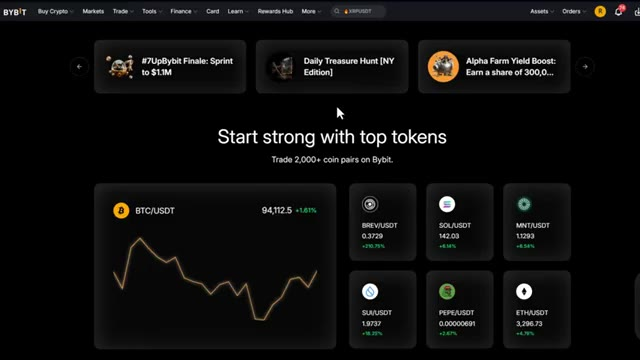
🔍 Agrandir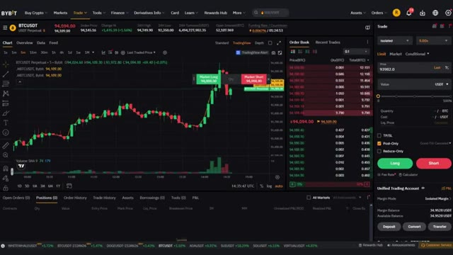
🔍 Agrandirtype. Vous pouvez utiliser la marge croisée ou la marge isolée. Personnellement, j'utilise la marge isolée car elle limite votre risque à cette position spécifique uniquement. Vous pouvez utiliser jusqu'à 100 fois de effet de levier sur un pari d'achat, mais pour les débutants, je recommande de commencer avec 5 fois à 10 fois de effet de levier jusqu'à ce que vous soyez à l'aise. Confirmez les détails de votre ordre, puis cliquez sur acheter slash long ou vendre slash short pour ouvrir votre position.
Interface & Outils : Interface de l'échange Bybit (TradingView intégré).
Contenu textuel & Code : Graphique en chandeliers du BTCUSDT en unité de temps 5m, carnet d'ordres, et panneau de passage d'ordres affichant les options de marge (Isolated, Cross, Portfolio).
Action / Démonstration : Sélection et explication du mode de marge isolée dans le panneau de trading de Bybit.
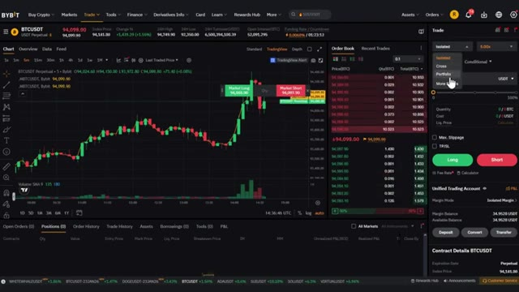
🔍 AgrandirUne fois votre ordre exécuté, vous pouvez le voir sous l'onglet Positions en bas de l'écran. Maintenant que vous savez comment utiliser les produits dérivés sur Bybit, passons à la stratégie proprement dite qui peut vous faire réaliser des profits importants par jour. Très bien, entrons maintenant directement dans les stratégies. Nous allons utiliser l'indicateur Super Trend, qui est l'un des moyens les plus simples pour trouver les tendances sur le marché.
Interface & Outils : Interface de l'échange de cryptomonnaies Bybit (trading de produits dérivés).
Contenu textuel & Code : Graphique du BTCUSDT en unités de 5 minutes, carnet d'ordres (order book) à droite, et onglet "Positions (1)" en bas affichant une position ouverte sur le contrat BTCUSDT Perp avec un effet de levier isolé de 50x.
Action / Démonstration : Visualisation d'une position ouverte et active dans le tableau de bord de trading après exécution d'un ordre.
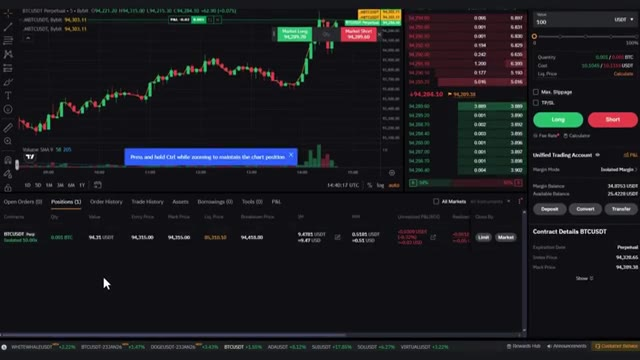
🔍 AgrandirMaintenant, allez sur Trade and View. Vous pouvez utiliser la version gratuite pour cela. Cliquez sur indicateurs, tapez super trend et sélectionnez celui-ci ici, c'est vraiment simple, si la ligne est verte c'est un signal d'achat, mais si la ligne est rouge il est temps d'ouvrir une position short, maintenant il est vrai aussi que l'indicateur super trend a quelques problèmes quand vous l'utilisez seul, l'indicateur identifie les tendances quand le marché a un fort momentum dans une direction, mais il va constamment vous donner des signaux d'achat et de vente même quand le marché évolue en range et manque de momentum significatif et vous pouvez perdre beaucoup d'argent aussi. Donc à cause de cela, allons directement à nos trois
Interface & Outils : TradingView (Graphique de prix crypto)
Contenu textuel & Code : Graphique du BTCUSDT Perpetual Contract (Bybit) en unité de temps 30 minutes, avec l'indicateur technique Supertrend (paramètres 10, 3) affichant des zones vertes (signal haussier) et rouges (signal baissier).
Action / Démonstration : Le curseur pointe sur le graphique au moment du basculement de l'indicateur Supertrend du vert au rouge, illustrant un signal de vente (short).
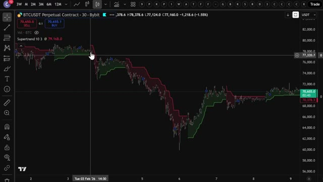
🔍 Agrandirstratégies qui vont vous aider à ne pas perdre d'argent lorsque vous tradez. La première stratégie est très simple. Vous allez sur votre graphique Bitcoin sur TradingView, vous cliquez sur les indicateurs et vous ajoutez trois indicateurs Supertrend à votre graphique. Oui, vous avez bien entendu, trois fois le même indicateur. Ensuite, allez dans les paramètres du premier et changez la période ATR à 12 et le multiplicateur ATR à 3. Pour le deuxième indicateur, définissez les valeurs à 10 et 1. Et enfin, pour le troisième indicateur, définissez les valeurs à 11 et 2. Le secret est de trader lorsque toutes les lignes de l'indicateur sont de la même couleur. Comme vous pouvez le voir
Interface & Outils : TradingView / Graphique de trading BTCUSDT (Bybit)
Contenu textuel & Code : Bougies japonaises (BTCUSDT 30m), prix actuel à 70 637,0 USDT, indicateur Supertrend (10, 3) affichant les bandes de tendance vertes et rouges.
Action / Démonstration : Présentation de la configuration initiale du graphique Bitcoin avec le premier indicateur Supertrend.
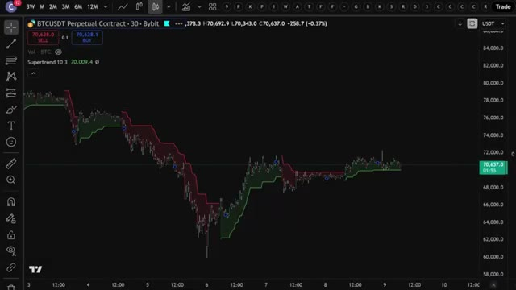
🔍 AgrandirIci, certaines lignes sont vertes et d'autres sont rouges. Cela montre que le marché n'est pas en plein momentum et qu'il évolue peut-être latéralement. Il est donc préférable d'attendre que toutes les lignes prennent la même couleur avant de trader. Si toutes les lignes deviennent vertes, cela montre que le marché a un fort momentum et vous pouvez prendre une position acheteuse. Mais si toutes les lignes sont rouges, vous pouvez ouvrir une position vendeuse. Si vous suivez cette approche, vous pouvez potentiellement prendre des positions au bon moment et augmenter vos profits. Maintenant, si vous prenez une nouvelle position, il est également important de savoir comment sortir de cette même position. Pour cela, il existe différentes
Interface & Outils : Graphique de trading (TradingView / interface Bybit)
Contenu textuel & Code : Paire BTCUSDT Perpetual Contract en unité de temps 30 minutes, indicateur technique à lignes multiples alternant entre le vert et le rouge montrant un marché sans momentum clair.
Action / Démonstration : Analyse visuelle du manque de momentum et de l'évolution latérale des prix, en expliquant qu'il faut attendre que toutes les lignes prennent la même couleur avant de trader.
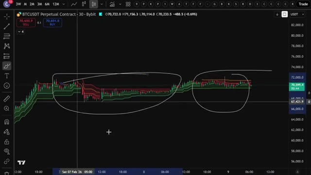
🔍 Agrandirfaçons de le faire. Une méthode consiste à définir un niveau de take profit avec un ratio de 1,5. Vous sortez du trade et sécurisez vos profits lorsque le prix atteint ce niveau. Une autre stratégie de sortie intervient lorsque l'une des lignes change de couleur. Ainsi, comme vous pouvez le voir ici, si vous étiez entré dans un trade lorsque toutes les lignes étaient vertes, vous auriez réalisé un profit significatif et vous sortiriez du trade une fois que l'une des lignes devient rouge. Passons à la deuxième stratégie, celle-ci consiste à associer l'indicateur Supertrend à une moyenne mobile sur 200 jours. Cette stratégie est puissante car l'indicateur Supertrend identifie efficacement les positions courtes
Interface & Outils : TradingView / Bybit
Contenu textuel & Code : Graphique de prix BTCUSDT avec indicateur de tendance coloré (lignes rouges et vertes délimitant des canaux).
Action / Démonstration : Analyse graphique de la configuration des prix et des changements de couleur des lignes indicatrices pour illustrer la stratégie de sortie de trade.
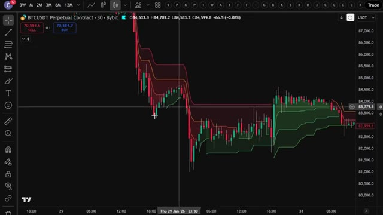
🔍 Agrandir...tendances à court terme. Bien que vous puissiez facilement identifier des tendances à long terme avec une moyenne mobile à 200 jours, allez dans l'onglet des indicateurs et ajoutez l'indicateur Supertrend au graphique en utilisant les paramètres par défaut. Ensuite, ajoutez une moyenne mobile exponentielle avec une longueur de 200. Pour modifier la longueur, vous pouvez cliquer ici dans les paramètres, cliquer ici sur les données d'entrée et modifier la longueur à 200. Maintenant, vous n'ouvrirez une position acheteuse que lorsque la ligne du Supertrend est verte et que le prix est au-dessus de la moyenne mobile à 200 jours.
Interface & Outils : TradingView intégré à Bybit
Contenu textuel & Code : Graphique en chandeliers du contrat perpétuel BTCUSDT en unité de temps 30 minutes, avec la barre d'outils supérieure de TradingView visible.
Action / Démonstration : Le curseur se déplace pour cliquer sur l'onglet d'insertion des indicateurs techniques afin d'ajouter le Supertrend.
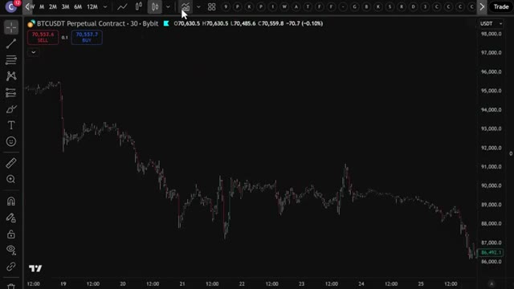
🔍 AgrandirEt vous n'ouvrirez une position courte que lorsque la ligne de super tendance est rouge et qu'elle se trouve en dessous de la moyenne mobile à 200 jours. Ici, vous pouvez voir que la ligne de super tendance est verte, mais le prix n'est pas au-dessus de la 200, vous pouvez donc attendre que le prix croise au-dessus de la 200 comme ici. Et si la ligne reste verte, c'est le moment idéal pour ouvrir une position longue. Vous pouvez régler le niveau de take profit à un ratio de 1,5, sortir du trade et sécuriser vos profits lorsque le prix atteint ce niveau, ou sortir du trade lorsque la ligne devient rouge comme je vous l'ai dit plus tôt. Un exemple différent est celui-ci où vous pouvez voir
Interface & Outils : TradingView (interface graphique de trading).
Contenu textuel & Code : Paire BTCUSDT (Bybit, 30 min), Supertrend (zones colorées rouge/verte), moyenne mobile à 200 périodes (ligne bleue), avec une zone encerclée montrant un changement de signal de tendance.
Action / Démonstration : Analyse technique du graphique pour expliquer les conditions d'ouverture d'une position courte (short) en fonction de la position du prix par rapport à la moyenne mobile et à la Supertrend.
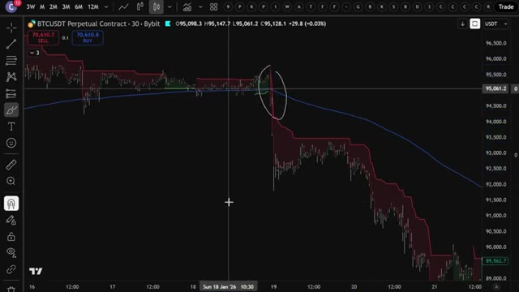
🔍 Agrandirque la ligne super trend est rouge mais vous devez attendre jusqu'à ce que le prix chute en dessous de la moyenne mobile à 200 jours et si la ligne reste rouge c'est le moment d'ouvrir une position short en passant à notre troisième et dernière stratégie cela implique d'utiliser l'indicateur ichimoku donc allez dans l'onglet des indicateurs tapez ichimoku et sélectionnez celui-ci ici ses paramètres par défaut sont désordonnés donc pour faciliter la lecture vous pouvez modifier en décortiquant les cases ici et changer ces arrière-plans de tracé en violet mais comment ça fonctionne cette zone violette est le nuage Kumo vous n'ouvrirez une position long que si le
Interface & Outils : TradingView / Bybit
Contenu textuel & Code : Paire BTCUSDT, chandelier en unité de temps 30 minutes, ligne Supertrend rouge, moyenne mobile bleue (200 jours), et zones de positions/backtest (rectangles vert et rouge).
Action / Démonstration : Analyse graphique de la stratégie combinant le Supertrend rouge et le passage du prix sous la moyenne mobile pour initier une position short.
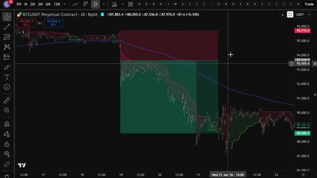
🔍 AgrandirLa ligne Supertrend est verte et le prix est au-dessus du nuage Kumo. Ne prenez pas de position si le prix est à l'intérieur ou en dessous du nuage Kumo, et vous n'ouvrirez une position short que lorsque la ligne Supertrend sera rouge et que le prix sera en dessous du nuage Kumo. Vous pouvez voir ici que la ligne Supertrend est verte mais que le prix est actuellement en dessous du nuage Kumo, vous devez donc patienter. Alors que le prix entre dans le nuage Kumo, je vous recommandes d'attendre qu'il remonte au-dessus du nuage Kumo. Une fois qu'il dépasse le nuage Kumo, assurez-vous que la ligne Supertrend reste verte et vous pourrez alors entrer sur votre
Interface & Outils : TradingView / Bybit
Contenu textuel & Code : Supertrend (10, 3), Ichimoku Cloud (9, 26, 52, 26), paires BTCUSDT Perpetual 30 min.
Action / Démonstration : Analyse de la position du prix par rapport au nuage Kumo et à la ligne Supertrend pour déterminer les conditions d'achat (long).
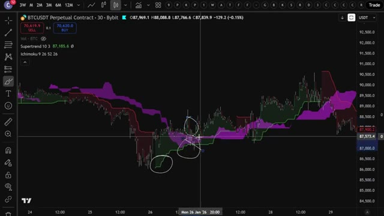
🔍 Agrandirposition longue. Je vais vous montrer un autre exemple. Vous pouvez voir ici que la ligne super trend est rouge. Avant d'entrer dans le trade, vous devez attendre que le prix chute en dessous du nuage Kumo. Pour la stratégie de sortie, vous pouvez également définir un niveau de take profit à un ratio de profit de 1,5 ou sortir du trade une fois que le prix pénètre à l'intérieur du nuage Kumo. Rappelez-vous simplement que cette stratégie fonctionne beaucoup mieux si vous utilisez Bybit ou BingX plutôt que d'autres bourses. Assurez-vous donc de cliquer sur mes liens ci-dessous.
Interface & Outils : Interface graphique de trading (TradingView / Bybit).
Contenu textuel & Code : Supertrend, Ichimoku (9, 26, 52, 26), paires BTCUSDT Perpetual Contract.
Action / Démonstration : Analyse d'une configuration de vente (short) avec le passage du prix sous le nuage Kumo.
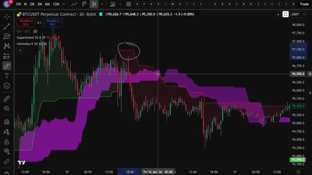
🔍 AgrandirDonc maintenant vous comprenez exactement comment ces trois stratégies fonctionnent manuellement. Mais c'est là que ça devient vraiment intéressant. Au lieu de surveiller des graphiques toute la journée et de faire ça à la main, j'ai donné chacune de ces stratégies exactes à Claude et je lui ai demandé de m'écrire un script Pine complet pour chacune, afin que TradingView puisse détecter automatiquement ces signaux pour moi, peu importe la stratégie que je souhaite utiliser. Commençons par la stratégie numéro une, le triple super trend. Voici le prompt exact que j'ai utilisé. Je vais l'afficher à l'écran dès maintenant pour que vous puissiez le copier exactement. Ce prompt exact
Interface & Outils : TradingView, Windows PowerShell (Claude Code)
Contenu textuel & Code : Code Pine Script v5, indicateur Supertrend, EMA 200, règles d'entrée/sortie, paramètres ATR.
Action / Démonstration : Génération et configuration d'un script de stratégie de trading via l'assistant IA Claude.
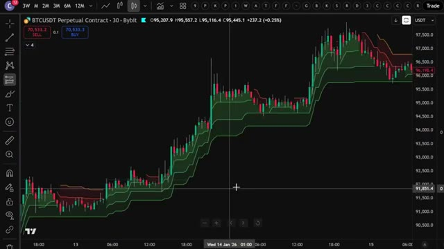
🔍 Agrandir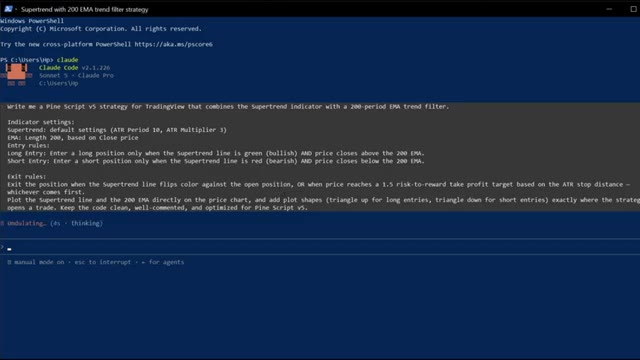
🔍 Agrandir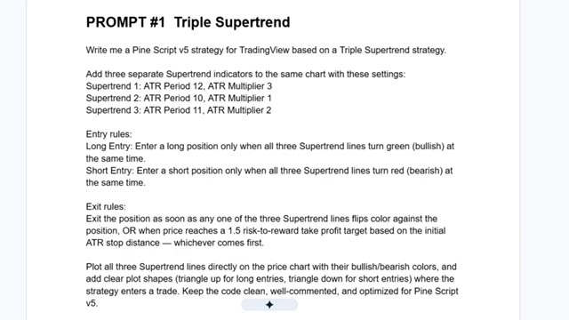
🔍 Agrandirainsi que le script Pine utilisé dans cette vidéo est disponible dans mon groupe privé. Vous trouverez le lien ci-dessous. Ouvrez TradingView, allez sur n'importe quel graphique, je vais utiliser Bitcoin à nouveau et en bas à droite de l'écran, cliquez sur l'onglet Éditeur Pine. Sélectionnez tout le code par défaut, supprimez-le et collez ce script Pine. Cliquez sur "Ajouter au graphique" et, comme par magie, TradingView le compile et trace les trois lignes SuperTrend directement sur les bougies avec des triangles verts et rouges indiquant exactement où la stratégie serait entrée. Maintenant, pour la stratégie numéro deux, le SuperTrend plus l'EMA 200. Même processus. Voici la consigne. Collez ceci dans un
Interface & Outils : TradingView (interface web de graphiques boursiers).
Contenu textuel & Code : Graphique de prix du Bitcoin (BTCUSDT Perpetual Contract), unité de temps 2h, affichant les bougies vertes et rouges ainsi que l'histogramme de volume en bas, avec une infobulle indiquant « Change symbol ».
Action / Démonstration : Sélection ou survol du symbole du graphique pour choisir une crypto-monnaie (Bitcoin), conformément aux instructions audio.
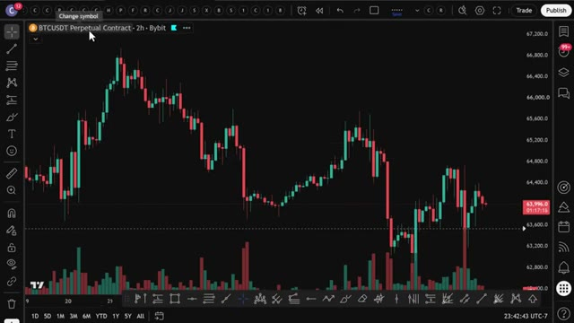
🔍 AgrandirNouvel onglet de l'éditeur Pine, cliquez sur Ajouter au graphique, et maintenant vous avez la moyenne mobile exponentielle à 200 périodes tracée avec la ligne Super Trend. Et la stratégie marque automatiquement chaque base acheteuse et vendeuse sur ce filtre de tendance. Et enfin, stratégie numéro trois, Super Trend plus nuage Ichimoku. Voici ce script. Collez-le, appuyez sur Ajouter au graphique, et maintenant le nuage Kumo est ombré directement sur votre graphique avec des signaux d'achat et de vente qui se déclenchent dès que le prix passe au-dessus ou en dessous. Maintenant, pour n'importe laquelle de ces trois stratégies, vous pouvez cliquer sur le testeur de stratégie et voir le test rétrospectif complet. Taux de réussite, facteur de profit, courbe de capital, tout y est.
Interface & Outils : TradingView, Explorateur de fichiers Windows
Contenu textuel & Code : Paire BTCUSDT.P (2h, Bybit), indicateurs ST+EMA200 et ST+Ichimoku, repères BUY/SELL/TP/SL, fichiers de stratégie (.txt, .py, .pine, .json)
Action / Démonstration : Visualisation des signaux générés par la stratégie Supertrend + EMA 200 sur TradingView, navigation dans les scripts de trading, puis test visuel de la stratégie Supertrend + Ichimoku.
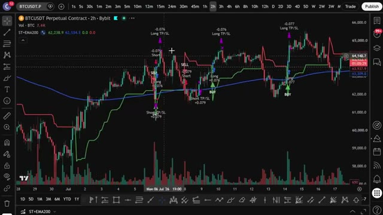
🔍 Agrandir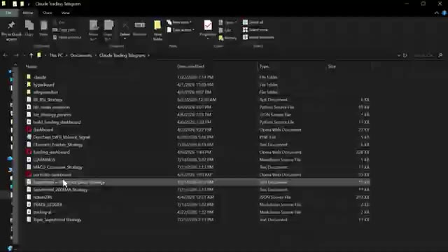
🔍 Agrandir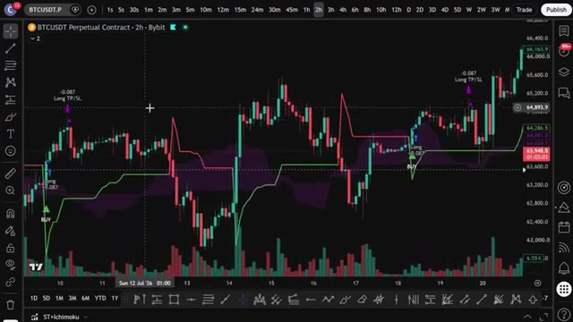
🔍 AgrandirDonc vous savez exactement comment cette stratégie aurait fonctionné historiquement avant de risquer un seul dollar. Et si vous ouvrez le testeur et que vous n'aimez pas ce que vous voyez, peut-être que le taux de réussite n'est pas assez élevé sur la version Ichimoku ou que la courbe de capital sur le triple super trend n'est pas aussi lisse que vous le souhaitez. Ne stressez pas. C'est tout à fait normal. Chaque condition de marché est différente et c'est là que vous la personnalisez. Retournez simplement voir Claude et affinez le prompt. Dites-lui. Ajoutez un filtre RSI pour ne pas entrer quand le marché est suracheté. Réinjectez cela dans Claude, copiez le nouveau code, collez
Interface & Outils : TradingView, Terminal CLI (Claude Code)
Contenu textuel & Code : Paire BTCUSDT.P 6h (Bybit), indicateurs Supertrend / Ichimoku, signaux BUY/SELL, prompt CLI : "Add an RSI filter so we don't enter when the market's overbought."
Action / Démonstration : Analyse visuelle du comportement des signaux sur le graphique de prix et ajout d'une condition de filtrage RSI dans le code via le terminal de l'assistant IA.
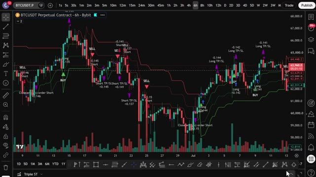
🔍 Agrandir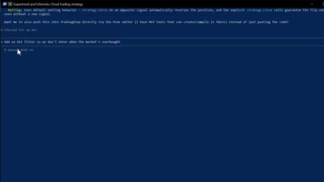
🔍 Agrandirl'intégrer, cliquer sur enregistrer, et continuer à répéter cela jusqu'à ce que la courbe de capital commence à grimper de la manière que vous voulez. Une fois que vous avez affiné la stratégie qui correspond le mieux à votre style, configurez des alertes pour ne jamais manquer un signal. Cliquez sur l'icône du réveil en haut de TradingView ou faites un clic droit sur l'une des formes de signal et sélectionnez "ajouter une alerte", puis définissez vos conditions. TradingView vous avertira à la seconde où l'une de ces trois stratégies émet un signal directement sur votre téléphone. Ainsi, au lieu de rester assis là pendant des heures à attendre que la tendance s'aligne, le code fait tout le travail difficile pour les trois stratégies en même temps. Dès que les conditions sont réunies, boum, vous recevez l'alerte, vous exécutez et vous êtes
Interface & Outils : TradingView
Contenu textuel & Code : Paire BTCUSDT.P, indicateurs Supertrend/Ichimoku/RSI/EMA200, métriques de backtesting (Max drawdown 43.49%, CAGR 4.15%).
Action / Démonstration : Visualisation des signaux de stratégie sur graphique et analyse des métriques de performance globales.
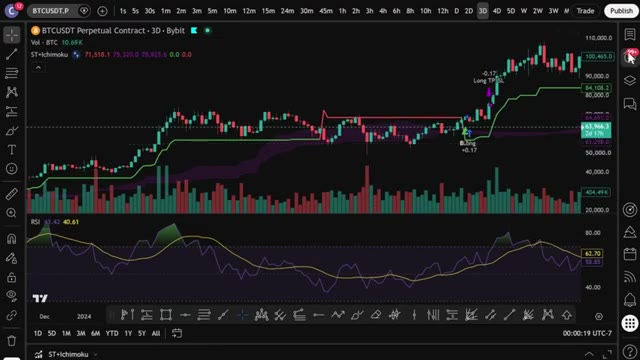
🔍 Agrandir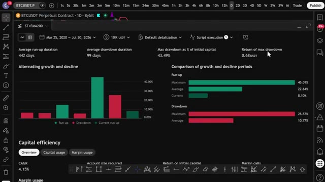
🔍 AgrandirC'est fait. Maintenant, si vous voulez aller encore plus loin et faire en sorte qu'un trade s'ouvre automatiquement sur votre exchange dès qu'un signal se déclenche, j'ai ce qu'il vous faut. J'ai mis en place un groupe privé où je partage tous mes cas d'usage de Claude Code, de son intégration avec Telegram et TradingView jusqu'à la recherche de baleines sur Hyperliquid. Tout cela de façon automatique.
Interface & Outils : TradingView, Whop, Telegram (ClaudeTelegramBot)
Contenu textuel & Code : - TradingView : Paire BTCUSDT.P (Perpetual Contract 2h sur Bybit), indicateur ST+EMA200, signaux BUY / SELL et niveaux de Take Profit / Stop Loss (Long TP/SL, Short TP/SL). - Whop : Offre "AI Trade Edge" par Alex Carter ($79.99/month), accès aux bots de trading IA, templates et guides. - Telegram : Instructions du bot `ClaudeTelegramBot` (`To pair: DM me anything — you'll get a 6-char code`, `/telegram:access pair <code>`), commandes `/start` et `/status`, message de validation "Paired! Say hi to Claude."
Action / Démonstration : Démonstration de signaux techniques sur un graphique Bitcoin, présentation du groupe privé sur Whop, puis configuration et appairage d'un bot Telegram lié à Claude Code.
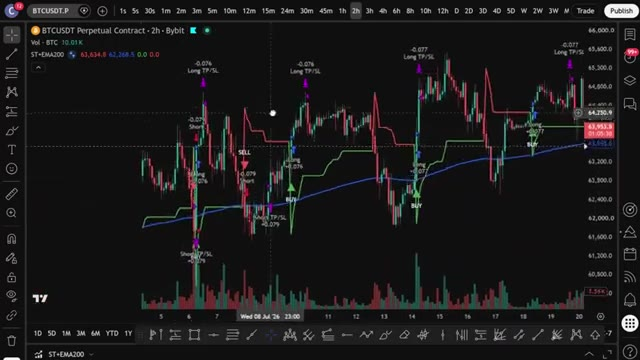
🔍 Agrandir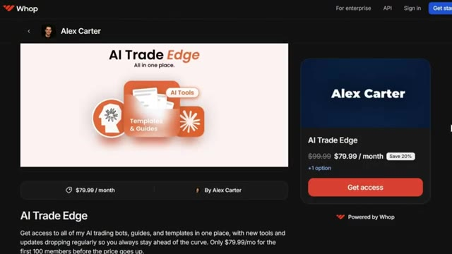
🔍 Agrandir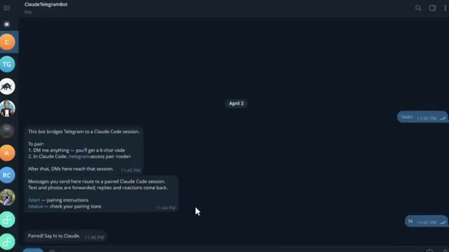
🔍 AgrandirTout ce que je vous ai montré aujourd'hui, tout est dans le groupe. Et j'ajoute constamment de nouvelles choses, de nouvelles stratégies, de nouveaux prompts, de nouvelles intégrations. Chaque fois que je crée quelque chose de nouveau, cela va directement là-dedans. Le prix est de 79,99 $ par mois. Et honnêtement, quand vous pensez à ce que c'est vraiment, la configuration de trading par IA la plus à la pointe de la technologie disponible pour les traders particuliers en ce moment, constamment mise à jour avec tout d'inclus.
Interface & Outils : Plateforme d'abonnement Whop et pages web de documentation des outils de trading.
Contenu textuel & Code : Tarification d'abonnement à 79,99 $/mois et descriptifs de fonctionnalités d'IA pour le trading.
Action / Démonstration : Présentation commerciale de la communauté et des outils d'abonnement.
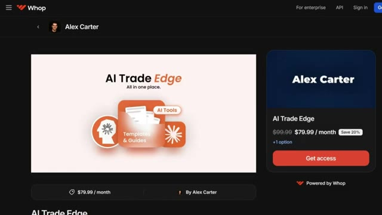
🔍 AgrandirÀ l'intérieur, il y a aussi un cours complet de trading agentique. 2,5 heures. De débutant à expert. Aucune expérience en programmation n'est nécessaire. À la fin, vous aurez votre propre système de trading IA fonctionnant en direct. Quelque chose que la plupart des traders particuliers ne savent même pas être possible à l'heure actuelle. 79,99 $ par mois. Un seul bon trade le rembourse. Et les 100 premiers membres bloquent ce tarif de manière permanente.
Interface & Outils : Interface web de cours en ligne et plateforme de vente Whop
Contenu textuel & Code : Liste des modules de formation (Hyperliquid Whale Tracker, TradingView MCP, Firecrawl MCP, Claude Routines, Pine Script backtest, Telegram Control Plane, WEEX Webhook)
Action / Démonstration : Présentation du programme du cours complet de trading agentique et des différents modules disponibles pour les utilisateurs.
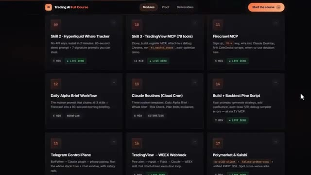
🔍 AgrandirAprès cela, le prix augmente. Le lien est dans la description. Vous ne pouvez vraiment pas vous permettre de rater ça. Et c'est exactement comme ça que j'ai automatisé ces trois stratégies super trend en utilisant Claude. Pas de codage, pas de bot Discord à 100 $, juste l'IA qui fait le plus gros du travail. Si vous voulez vraiment les mettre en pratique, assurez-vous d'utiliser Bybit ou BingX. Car ces stratégies y fonctionnent bien plus fluidement que sur la plupart des autres plateformes. Les liens sont ci-dessous et vous pouvez obtenir jusqu'à 30 000 USDT et des bonus sur Bybit. Si vous voulez voir une démonstration complète de la façon dont je trade en utilisant uniquement mon Telegram,
Interface & Outils : TradingView et la plateforme d'échange BingX.
Contenu textuel & Code : Graphique de prix cryptographique avec indicateur Super Trend ("Triple ST") et signaux d'exécution (Buy, Sell, TP/SL). Interface d'inscription avec champs email/mot de passe et bonus de bienvenue.
Action / Démonstration : Présentation d'un graphique de trading automatisé suivi d'une promotion de la plateforme partenaire BingX.
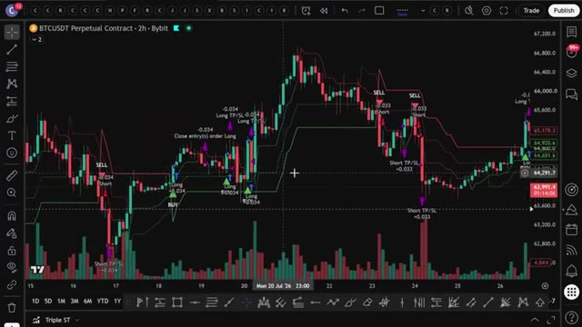
🔍 Agrandir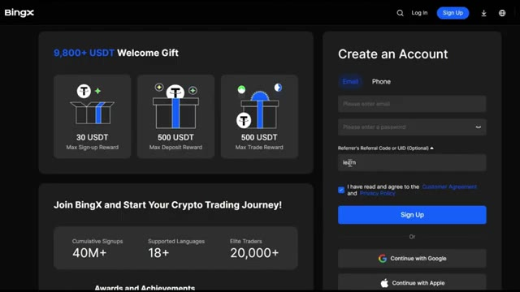
🔍 Agrandirla démo complète de tous les cas d'utilisation sur TradingView, et comment je suis automatiquement les plus gros trades des baleines sur Hyperliquid, cliquez sur la vidéo qui apparaît à l'écran dès maintenant. Et si vous voulez le guide complet étape par étape sur la façon de construire votre propre système de trading agentique avec Claude, cette vidéo apparaît également à l'écran. Allez voir ça ensuite. Si vous avez trouvé cela utile, laissez un pouce bleu. Ça aide vraiment la chaîne. Abonnez-vous si ce n'est pas déjà fait, et je vous vois dans la prochaine.
Interface & Outils : Plateforme de trading décentralisée Hyperliquid.
Contenu textuel & Code : Graphique de prix journalier (1D) de la paire HYPE/USDC, carnet d'ordres (Order Book) en temps réel, indicateur de volume (Volume SMA), et données de marché (prix actuel autour de 36.27 USD).
Action / Démonstration : Navigation et affichage de l'interface de trading d'Hyperliquid pour analyser les prix et le carnet d'ordres.
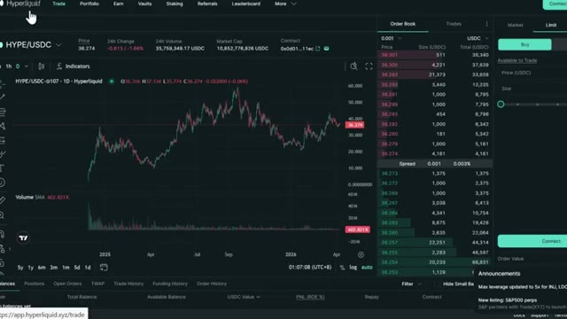
🔍 Agrandir